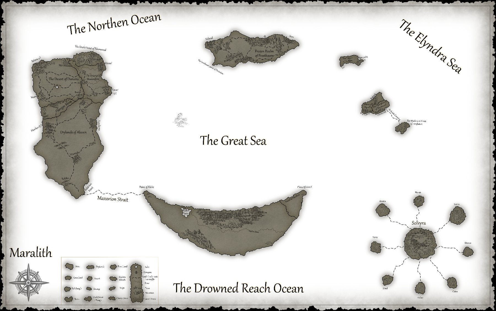
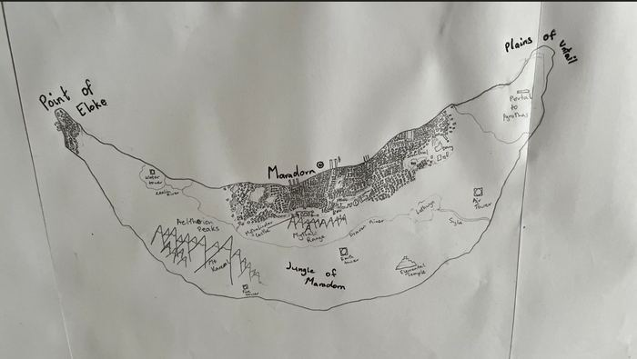
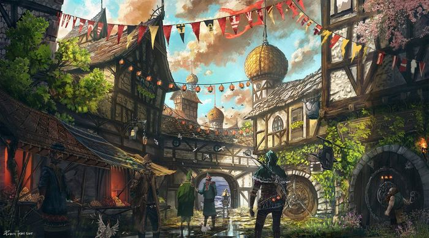
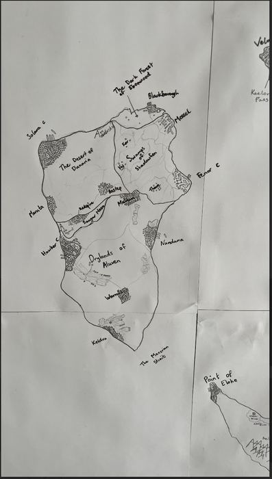
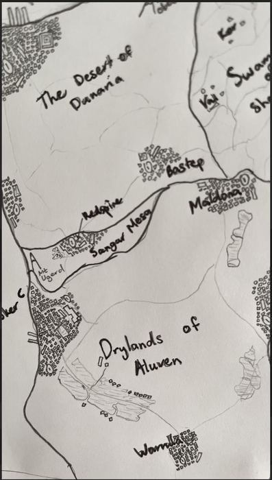
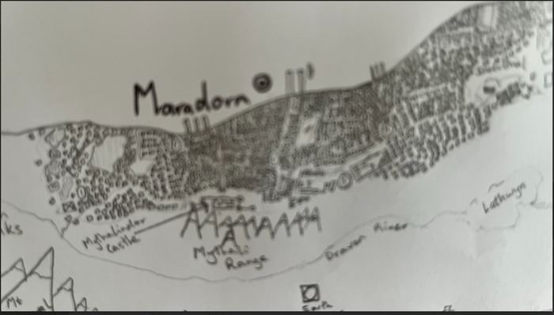
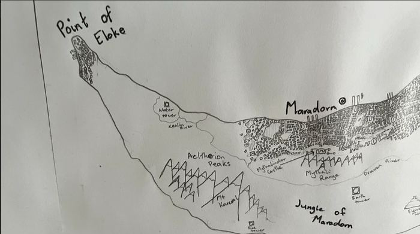
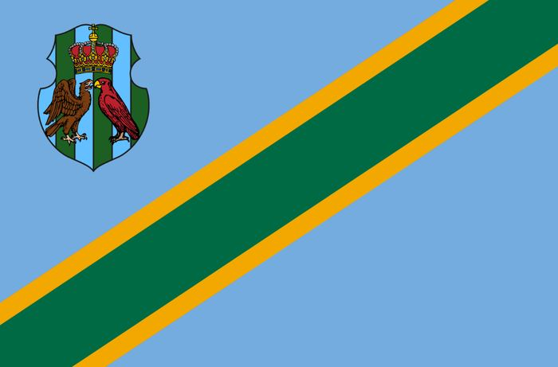

Fire
Birstang
Courage, fighting spirit, determination, competition and sport. His animal is the dragon. His rage made Pyrothas.

Four Primordials shaped the land, the sea, the sky and the fire beneath. What they made is still being mapped, argued over, and fought for.
Every chapter of the sourcebook, gathered into one readable codex — thirty books, three hundred and thirty chapters, forty-seven plates.
According to Primordial belief, before the world existed there were four: Birstang of Fire, Adurna of Water, Deloi of Earth and Vindr of Air. Together they made the lands, the oceans, the skies and the underworld. Deloi shaped the ground, Adurna filled the seas, Vindr raised the air, and Birstang brought heat and fire.
The making was not peaceful. Birstang fell into a rage, and out of that rage came Pyrothas — a hellish land set apart from the rest of Marailth, tied to the destructive side of fire. Fire itself is not evil. It is courage, determination and the will to fight. Pyrothas is what those forces become when they lose their balance.
From the Primordials came a wider family of gods. From their lands came nations, trade routes, wars and treaties. And in a later age, above all of it, an island appeared in empty sky — ringed by eight lesser islands and eight artifacts, held aloft by a doctrine that allows no carelessness.
Every later god descends from one of them. Their elements are not abstractions; they are the material the world is made from — and the things it can be unmade by.
Courage, fighting spirit, determination, competition and sport. His animal is the dragon. His rage made Pyrothas.
Defence against evil, mystery, the unknown, and the oceans and waterways. Mother of Nythera, Morvane and Marovar.
Family, life, caring, generosity, the land and living creatures. Her animal is the dog, most often a golden Labrador.
Intelligence, wisdom, thought, knowledge — and cricket. Father of Lucious, Rivian, Aethoron, Lyrenna and Dormir.
From the jungles of the south to a kingdom in the sky. Every realm below has its own book in the codex, and its own plate in the atlas.

Jungle, mountain and coastline. The City of Maradorn, the Council of Elders, the Mythali, and the oldest human compact in the south.

An island above the world, ringed by eight islands and eight artifacts. Its balance is absolute. Its fall would be heard everywhere.

Frontier cities, old roads and hard country. A land shaped by Aluven's reach and the long memory of what came before.

Red sands, deep veins of gold, and Mount Ugerd — a mountain that outlasts everyone who climbs it.

Mythalindor Castle, the Council of Elders, and a library that draws scholars from every sea.
Maps, flags, crests and bestiary sketches, lifted from the pages of the book. Forty-seven plates in all, viewable at full size in the atlas.


The long history in four beats. The full sequence — every Orbon, every war, every treaty — waits on the timeline.
Humanity names Redwick, Cherryfall, Karhiem, Fungladom, Frosthaven, Aluven and Maradorn. Everything else is still wilderness.
A vanished merchant fleet lights the fuse. Fifty-five years later, tens of millions are dead and no nation can claim a true victory.
On neutral plains, the nations sign the peace that becomes the foundation of the modern world — and the alliances that follow it.
An island appears in empty sky, ringed by eight islands. The Doctrine of Balance is born with it, and the sky becomes a country.